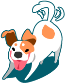

Amigo fiel
Somos una ONG dedicada a la protección, cuidado y bienestar de los animales.
Nuestra Historia
AMIGO FIEL se formó con el fin de poder rescatar, rehabilitar y luego dar en adopción aquellos animales abandonados o maltratados.
Nuestra forma de trabajo
Para llevar a cabo esta tarea, hay una serie de pasos que seguir:
PASO 1 – Rescate y recuperación:
Se trata de hacer todo lo posible para dar asilo a la mayor cantidad de animales posible, por un tema de espacio y de presupuesto, no siempre es factible.
Una vez que el animal es rescatado, se le realiza un control veterinario para conocer en qué estado se encuentra, se vacuna y desparasita. Paso seguido, se fija fecha para su castración.
PASO 2 – Difusión:
Una vez efectuada la castración, se observa su temperamento, comportamiento e interacción con otros animales y humanos. Luego de un minucioso diagnóstico se determina cuál sería su función en un hogar adoptivo: la de animal de compañía, guardia o alerta y qué tipo de ambiente sería ideal para el mismo: una casa, departamento, o un campo. Asimismo, se evalúa cual sería su adoptante correcto: una familia con niños o solo de adultos.
PASO 3 – Puesta en adopción:
Luego de haber sido evaluado su temperamento, se publican fotos en diferentes medios de comunicación; como internet en redes sociales, sitios dedicados al ofrecimiento de mascotas para adopción y anuncios en los diarios.
PASO 4 – Entrevistas:
Se entrevista a los posibles candidatos para cada adopción. Para poder adoptar es necesario ser mayor de edad, tener el consentimiento de todos los integrantes de la familia y acreditar su identidad mediante la presentación del documento de identidad. También se exige la copia de cualquier servicio a nombre del adoptante para poder cotejar la veracidad del domicilio.
PASO 5 – Seguimientos:
Cada animal se entrega en adopción con una chapa identificadora que tiene números de contacto del grupo y un número que corresponde al animal adoptado. Una vez que se efectuó la adopción, se vuelca esa información a una base de datos, que permite tener acceso a la información para llevar a cabo los seguimientos.
Se realizan varios llamados a lo largo del tiempo para ver cómo se adaptó a su nuevo hogar.
Muchos adoptantes generan un vínculo con Mascotas en adopción a traves de los años.